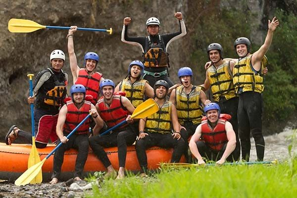

About Us — Exciting Expeditions
Here at Exciting Expeditions, our whitewater rafting trips are designed to provide thrill-seekers with an unforgettable experience on the water. Our expert guides ensure safety while you navigate through stunning landscapes and challenging rapids. Our mission is to provide thrilling and safe rafting experiences that connect you with nature, adventure, and lifelong memories. Whether you're a beginner or a pro, we have got a river for you. Oars Up!